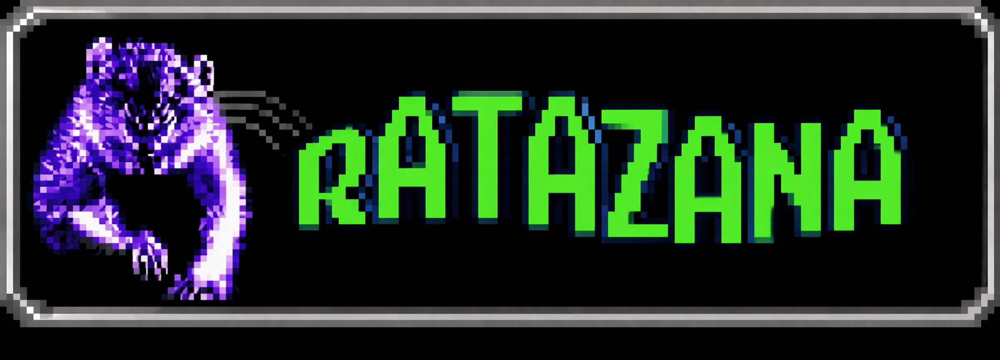

Os mistérios de Tainã
>> ARQUIVO DE RELATOS <<
⚠ AVISO: LEIA POR SUA CONTA E RISCO ⚠
TEM ALGO NA MATA - 12/11/2007
Faz umas três noites que a gente escuta um barulho de água batendo no fundo do poço desativado no quintal. Ontem eu fui lá com uma lanterna. A luz não chegava no fundo, mas eu juro que vi um reflexo pálido subindo. Meu cachorro não quer mais sair na porta dos fundos. A água tá muito fria... [ ler relato completo ]
A FITA DO CÁSSIO (TRANSCRITO) - 28/10/2007
Cássio sumiu na terça-feira. A polícia achou a câmera dele jogada na beira da estrada 4. O vídeo tem 4 minutos de estática e depois mostra ele correndo no escuro, respirando muito forte. Dá pra ouvir uma voz distorcida no fundo repetindo o nome dele. Eu transcrevi o áudio todo aqui... [ ler relato completo ]
TEM ALGO NA MATA - 04/10/2007
somos 4 em casa, eu, minha irmã mais nova, minha mãe e minha avó. moramos na mesma casa desde que minha mãe nasceu, e desde a infância da minha vó, uma casa simples bem perto da floresta de Tainã, cercada de uma mata alta e ainda por cima a maioria das estradas são de terra... [ ler relato completo ]
SHOUTBOX
[10:42] Roberto: o relato da fita do cassio me deu calafrios
[11:05] Ícaro: algm tem a foto da criatura??
[11:47] valeria: ta piorando. a agua escureceu
[23:51] Roberto: saia dai valeria pfv
[03:33] GUEST: venham ver a água


